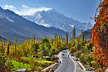

The Pakistan is geographically and ethnically diverse, and has a number of historical and cultural heritage sites. Condé Nast Traveller ranked Pakistan The Best Holiday Destination for 2020 and also declared it the third-highest potential adventure destination in the world for 2020. As security in the country improves, tourism increases; in two years, it has increased by more than 300%. The Pakistani government had launched online visa services for 175 countries and 50 countries were offered visa on arrival, making visiting Pakistan easier.

According to the World Economic Forum's Travel and Tourism Competitiveness Report 2017, the direct contribution of travel and tourism to Pakistan's GDP in 2015 was US$328.3 million, constituting 2.8% of the total GDP. According to the World Travel and Tourism Council, the direct contribution of travel and tourism to Pakistan's GDP in 2016 was Rs. 793 billion (equivalent to Rs. 4.0 trillion or US$14 billion in 2021), constituting 2.7% of the total GDP.[11] By 2025, the government predicts tourism will contribute Rs. 1 trillion (US$3.5 billion) to the Pakistani economy.